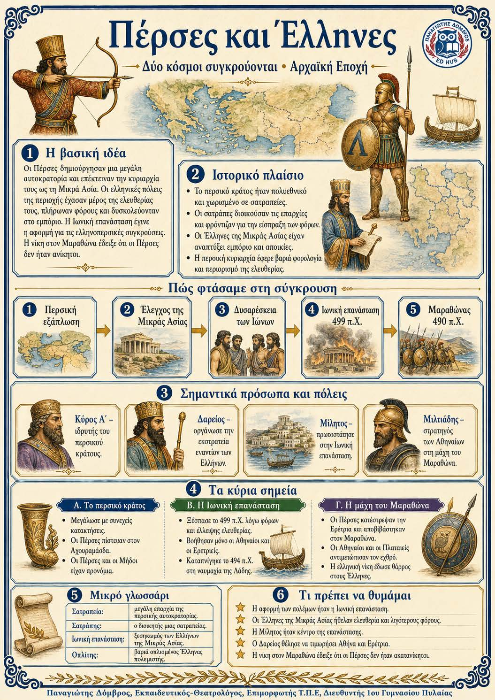

Πληροφοριογράφημα ενότητας
Το πληροφοριογράφημα αυτής της ενότητας δεν έχει ανέβει ακόμη. Οι σημειώσεις παραμένουν πλήρως διαθέσιμες.

Κεφάλαιο 4 · Αρχαϊκή εποχή (800–479 π.Χ.)
Η περσική αυτοκρατορία επεκτάθηκε ως τη Μικρά Ασία και περιόρισε την ελευθερία των ελληνικών πόλεων. Η βαριά φορολογία και τα εμπόδια στο εμπόριο προκάλεσαν την Ιωνική επανάσταση. Η αποτυχία της έγινε η αφορμή για νέες περσικές εκστρατείες στην Ελλάδα. Στον Μαραθώνα, οι Αθηναίοι και οι Πλαταιείς νίκησαν και έδειξαν ότι οι Πέρσες δεν ήταν ακατανίκητοι. Η σύγκρουση έφερε απέναντι μια μεγάλη αυτοκρατορία και ελληνικές πόλεις που υπερασπίζονταν την ελευθερία τους.
